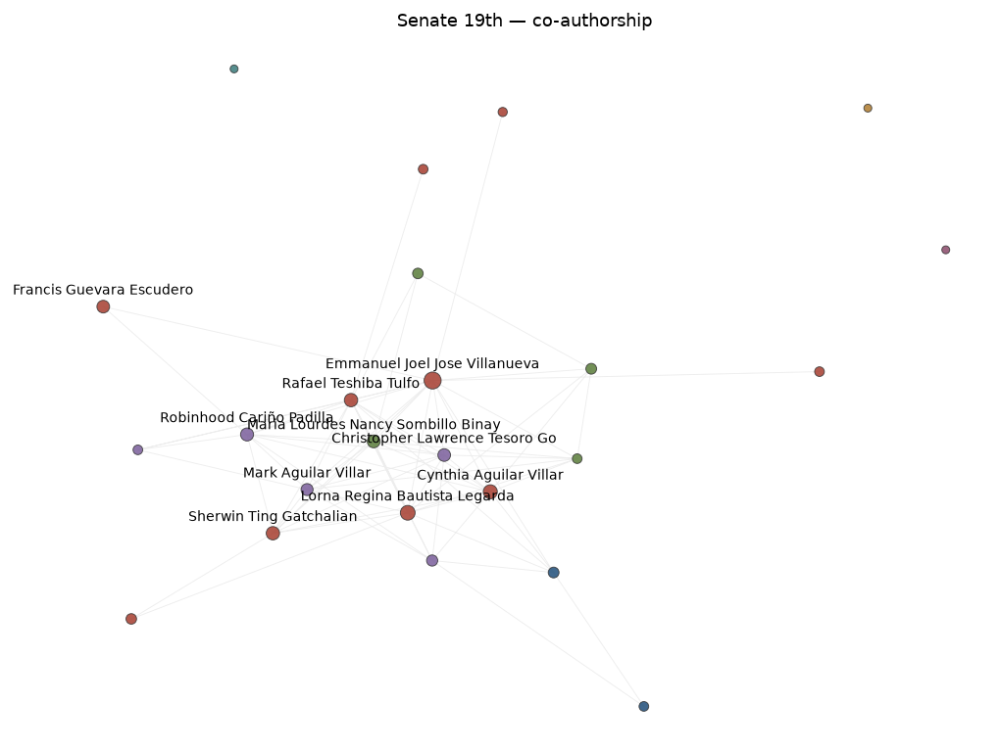

Statistics
| Nodes | 24 |
|---|---|
| Edges | 71 |
| Modularity | 0.089 |
| Communities (n≥2) | 4 |
| Communities (total) | 7 |
| Isolated fraction | 12% |
Interactive graph
Hover any node for the full attribute tooltip; drag to pan; scroll to zoom. All legislators are labeled; zoom in to separate overlapping names.
Static rendering

bills_coauthored are labeled. The interactive view above labels every node.